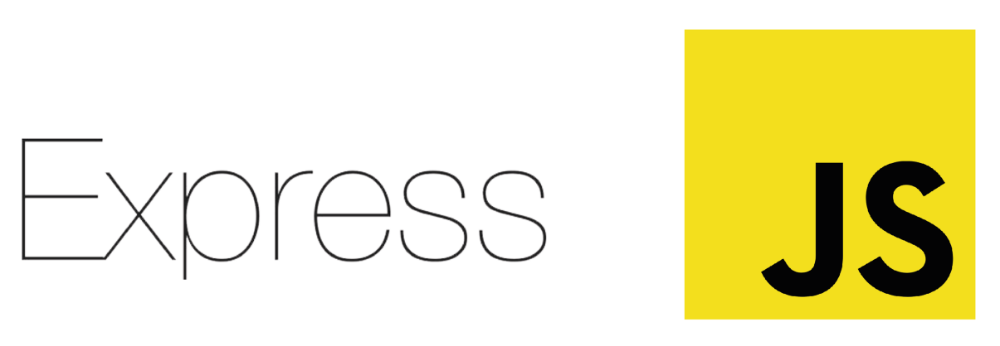

Express.js
Минималистичный, гибкий и быстрый веб-фреймворк для Node.js. Идеальный выбор для создания REST API, веб-приложений и микросервисов.

Версия
4.18.x (стабильная)
Еженедельные загрузки
~20 млн (npm)
Производительность
~15k req/s
Используют
IBM, Uber, Twitter
Что такое Express.js?
Express — это самый популярный веб-фреймворк для Node.js, который предоставляет минималистичный интерфейс для создания серверных приложений.
Он не навязывает архитектуру, давая разработчику полную свободу. Express лежит в основе многих других фреймворков (например, NestJS использует его под капотом по умолчанию) и является де-факто стандартом для Node.js.
С Express вы легко настроите маршруты, middleware для обработки запросов, подключите шаблонизаторы и создадите RESTful API.

Ключевые особенности
Гибкая маршрутизация
Мощная система маршрутизации с поддержкой параметров, регулярных выражений и группировки.
Middleware
Огромная экосистема middleware для логирования, аутентификации, парсинга тел запросов и CORS.
Шаблонизаторы
Интеграция с Pug, EJS, Handlebars и другими движками для серверного рендеринга.
REST API
Идеальный инструмент для быстрого создания RESTful сервисов любой сложности.
Базы данных
Легко подключается к MongoDB (Mongoose), PostgreSQL (Sequelize/Prisma) и другим БД.
Быстрый старт
Минимальный порог входа: сервер на Express можно написать буквально за 5 минут.
Быстрый старт с Express
Базовый сервер за 5 минут
const express = require('express');
const app = express();
const PORT = process.env.PORT || 3000;
// Middleware для парсинга JSON
app.use(express.json());
// Простой GET-маршрут
app.get('/', (req, res) => {
res.json({ message: 'Hello from Express.js!' });
});
// POST-маршрут для получения данных
app.post('/api/data', (req, res) => {
console.log(req.body);
res.status(201).json({ received: req.body });
});
// Запуск сервера
app.listen(PORT, () => {
console.log(`Server is running on port ${PORT}`);
});
Плюсы и минусы
Преимущества
- 🔥 Огромное сообщество — легко найти решение любой проблемы
- ⚡ Минимализм и гибкость — никакой магии, полный контроль
- 📦 Экосистема — тысячи готовых middleware и интеграций
- 📚 Простота изучения — идеальный старт для новичков в Node.js
- 🚀 Стабильность — используется годами в production миллионами компаний
Недостатки
- 🐌 Медленнее Fastify — для high-load проектов может уступать в производительности
- 🏗️ Отсутствие структуры — для больших проектов нужна самодисциплина
- 🔄 Callback-стиль — базовая архитектура не рассчитана на async/await из коробки
- 🛡️ Слабая типизация — в отличие от NestJS, TypeScript поддержка не встроена
Часто задаваемые вопросы
Чистый Node.js требует ручной обработки маршрутов, парсинга тела запроса и многих других низкоуровневых задач. Express предоставляет удобную абстракцию: маршрутизацию, middleware, утилиты для работы с req/res — это ускоряет разработку в разы.
Да, но требует продуманной архитектуры. Многие компании используют Express в микросервисной архитектуре. Однако для крупных монолитов часто выбирают более структурированные фреймворки, например NestJS (который, кстати, может работать поверх Express).
Используйте кластеризацию (модуль cluster), кеширование (Redis), сжимайте ответы (middleware compression), подключайте reverse-proxy (Nginx) и рассмотрите миграцию на Fastify, если узкое место — сам фреймворк.